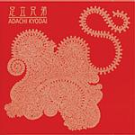

| Artist: | Adachi Kyodai |
| Title: | Adachi Kyodai |
| Label: | Musea FGBG 4495.AR |
| Length(s): | 52 minutes |
| Year(s) of release: | 2003 |
| Month of review: | [09/2003] |
| 1) | Back Track | 4.54 |
| 2) | MOther Goose | 3.21 |
| 3) | Push Me Into Tornado | 3.44 |
| 4) | I Talk To The Wind | 4.04 |
| 5) | All Shades Of Blues | 4.23 |
| 6) | Cheap Day Return | 2.51 |
| 7) | Erewhon | 6.34 |
| 8) | Unknown Troops | 3.56 |
| 9) | Springsilky Shower Landscape | 4.05 |
| 10) | Lemming | 5.40 |
| 11) | When That I Was A Little Tiny Boy | 2.12 |
| 12) | Guilt | 5.51 |